Dobermann · IGP 3
Caesar
Video to film
“We have recently accomplished the highest working dog title in a competition and Performadog has been an essential part of our success.”
Dr Michael Kern · Handler · Perth
 Proof, not promisesRead the lab case study
Proof, not promisesRead the lab case study
Reviews
34 of the people feeding Performadog, in their own words, from the original website. Where someone sells the food or owns a Von Forell dog, we say so.
Rated 9/10 by Petfood Reviews (Turkey Grain Free, user score 4.58 from 126 votes).
Long reads

Handlers & breeders · 2020
Interview with Charlotte Priest on her background, getting into dog sport, a short-lived breeding program and training her Von Forell GSD Django (Jang) to IGP 2.

Handlers & breeders · 2020
Long interview with Laurie Boutzetis of Seeuferhaus Kennels about Rottweilers, his mentors, breeding philosophy and tracking titles with his female Chilli (Bluelady vom Checkpoint Charlie).

Handlers & breeders · 2020
Interview with retired medical scientist Sue Kawecki on her life, her German Shepherds over the years and training her current Von Forell GSD, Monti.

Handlers & breeders · 2020
Interview with Adrian Young about moving from Rottweilers to German Shepherds, the Melbourne Sport Dog Club, and his Von Forell GSD Floyd, raised on Performadog.

Handlers & breeders · 2020
Interview with army veteran and trainer JP (John Paul) about becoming a trainer through a veterans' service-dog program, his Rottweiler Devil and his business 4D K9.

Handlers & breeders · 2020
Interview with 70-year-old former language teacher and dairy worker Annita Reynolds about German Shepherds, training and her Von Forell GSD Moser.

Handlers & breeders · 2019
Interview with Perth neurosurgeon Dr Michael Kern about choosing a Dobermann, learning to train his dog Caesar with Von Forell's help, and starting Caesar on Performadog and Purple Boost.
Short phone interviews with handlers and owners, dog, job, result. 20–30 to film
Dobermann · IGP 3
Caesar
Video to film
“We have recently accomplished the highest working dog title in a competition and Performadog has been an essential part of our success.”
Dr Michael Kern · Handler · Perth

Rottweiler · 20 km
Rolex
Video to film
“Our 2 year old female 'Swift' and 3 year old male 'Rolex' passed their Endurance Test… To quote our vet 'Rolex is as muscled as a Greyhound.'”
Allgemein Rottweilers · Breeders · Melbourne
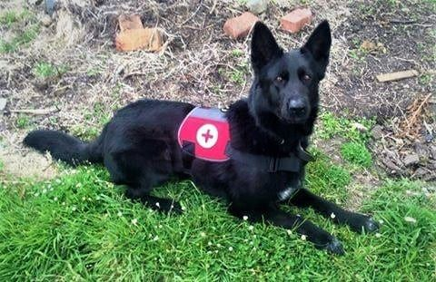
Search & rescue
SAR team
Video to film
“Since switching to Performadog Super Premium Dry Dog food I've found all my dogs have a huge increase in energy and are able to keep their peak condition in periods of intense work.”
James Craig · Director & handler · Tasmania K9 Search and Rescue
“We have recently accomplished the highest working dog title in a competition and Performadog has been an essential part of our success.”
Dr Michael Kern
Handler · Perth
Caesar · Von Forell Dobermann
Disclosure: Von Forell dog
“Since switching to Performadog Super Premium Dry Dog food I've found all my dogs have a huge increase in energy and are able to keep their peak condition in periods of intense work.”
James Craig
Director & handler · Tasmania K9 Search and Rescue
Search and rescue dogs
“Our 2 year old female 'Swift' and 3 year old male 'Rolex' passed their Endurance Test… To quote our vet 'Rolex is as muscled as a Greyhound.'”
Allgemein Rottweilers
Breeders · Melbourne
Swift & Rolex · Rottweilers

“We constantly get remarks on how good Koda looks and the shine of her coat.”
Derek Wilson
Detection dog handler · Melbourne
Koda · Labrador, medical alert
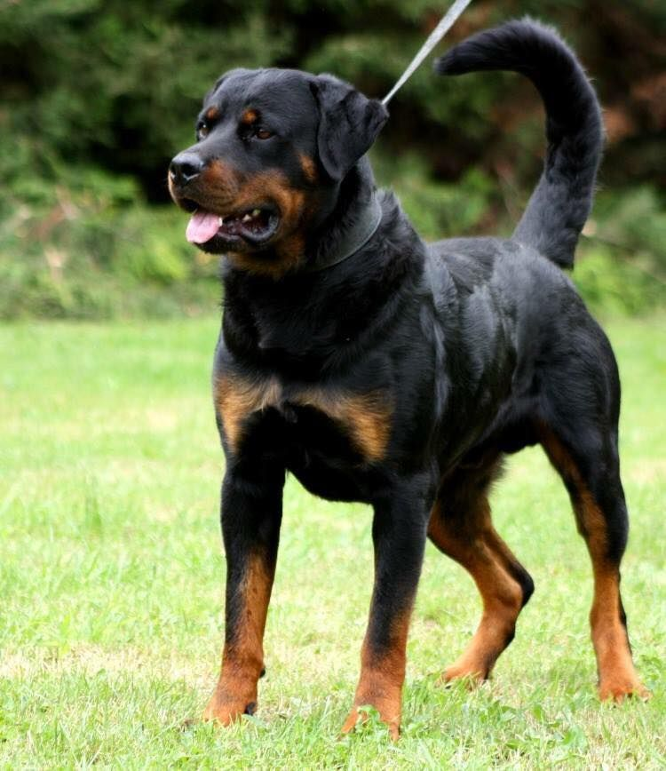
“Their muscular development is extraordinary as is their stamina… a 20 kg bag lasts almost two months.”
Tony Fazzolari
CEO · Premier Protection Services
52 kg Rottweiler & 36 kg American Bulldog
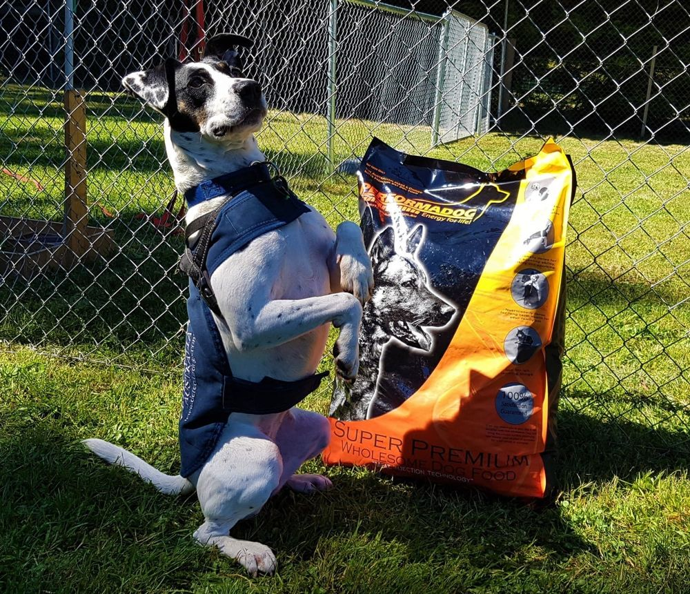
“Dog's coats are softer, you feed less of it than other dry food products on the market.”
Michelle Lynn
Trainer · Yarra Valley
Sport and scent detection dogs
Disclosure: Sells Performadog; trains detection dogs for Detector Dogs Australia
“What a difference in every Dogs performance and functionality!”
Troy Seraceno
Core Canine · board & train
5–10 client dogs a week
“I am at the end of the 20 Kg bag and I have dog zooming all over the place when I need it.”
Graeme Vincent
Dog sport
3-year-old Malinois
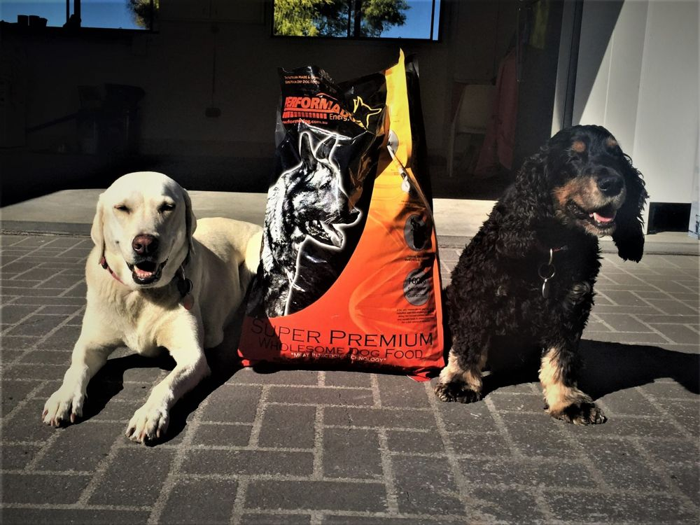
“Finally, a complete food that gives my dogs plenty of energy to last the day, and keeps them lean and competition fit.”
Cossette Doward
Competitor · Sydney
Two competition dogs
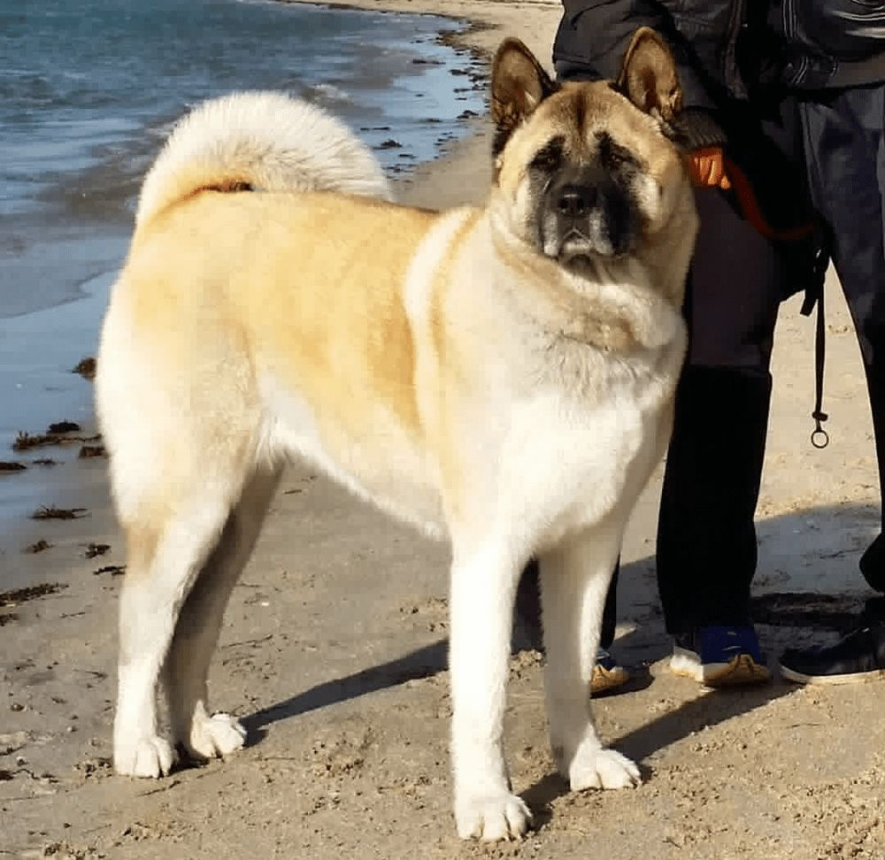
“I have certainly noticed her recovery after any exercise become quicker which is amazing.”
Marielle
RYPT Personal Training
Working-line German Shepherd & Akita
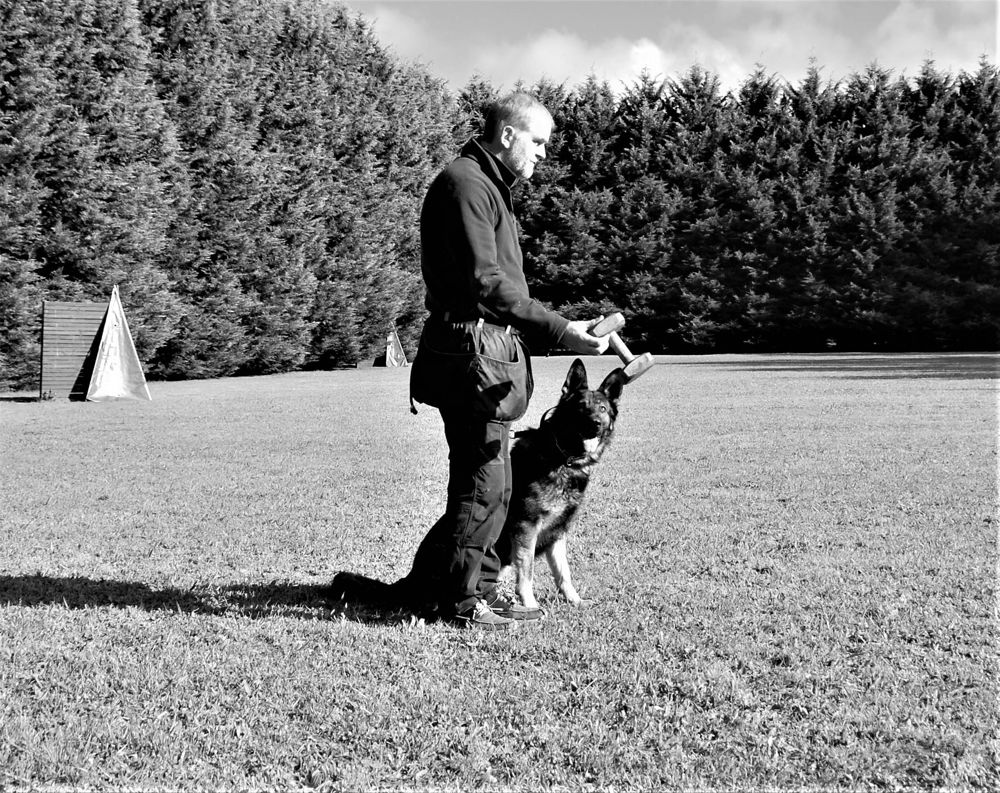
“I have found their stamina levels to be up, and general overall activity is higher than normal.”
Adrian Young
Melbourne
Floyd · Von Forell German Shepherd + 2
Disclosure: Von Forell dog
“I noticed a considerable change in their coat condition, muscle tone and stamina.”
Lisa Hampson
Victoria
Multiple dogs
“I've done extensive research into a lot of different foods and Performadog comes out on top by a very long way.”
Brett Talty
NSW
2 Jack Russells & 2 Maremmas · Ocean Fish
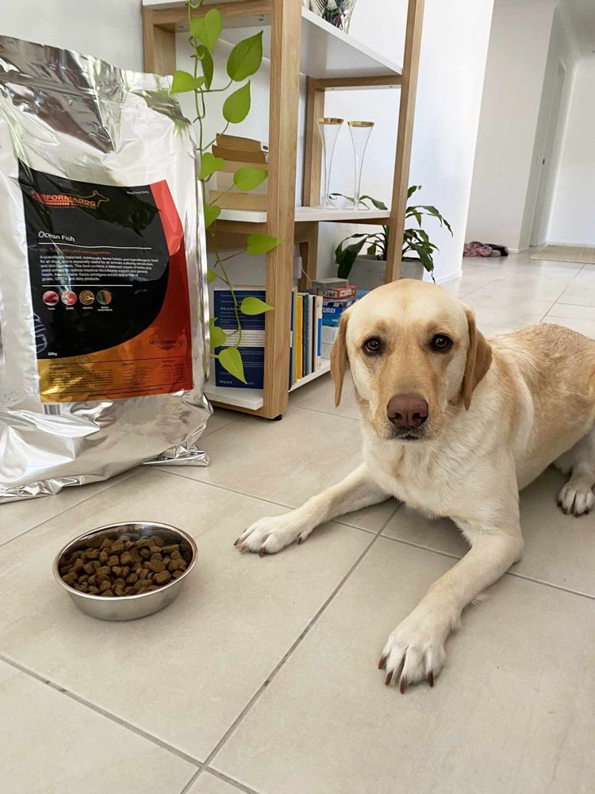
“She is of a healthy weight, regularly runs 5km-7km with me (she would run further if I let her), has a great digestive system, and her coat is shiny and thick.”
Abigail Jones-Walker
Owner
Nala · Labrador · Ocean Fish
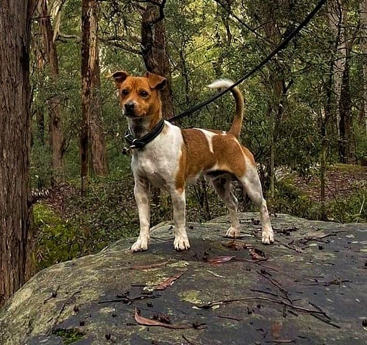
“I was so relieved and excited when I noticed improvements in Denzel's skin condition in the first two weeks.”
Gerard Carrington
NSW
Denzel · Miniature Fox Terrier
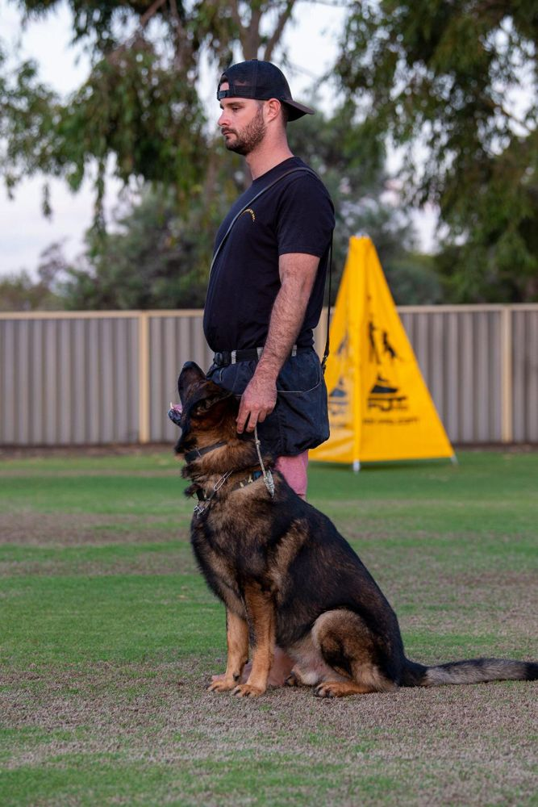
“I have never seen his fur shine like this before and rebounding energy levels to meet his working requirements.”
Drew Romeo
Perth
Working dog · Ocean Fish
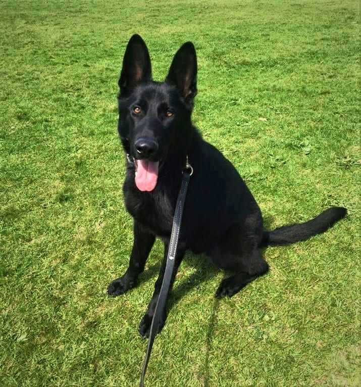
“Her coat gleamed, her stools were consistent and much smaller and her weight rarely fluctuated.”
Jess Mulhall
Melbourne
Puppies and adults
“This was an absolute first he has ever 'gobbled'… and his stools are actually solid.”
Margaret Basil
Melbourne
Rook · rare breed
“Within one week, his coat was such a brilliant shiny black, he had lost some weight.”
Linda Eadweards
Owner
Labrador · Ocean Fish + Purple Boost
“I use the grain free turkey and lamb and both my dogs thrive on it.”
Karly Liffen
Owner
German Shepherd & Kelpie cross · Turkey Grain Free
“So happy with Performadog Ocean Fish. My GSD continues to thrive on this product.”
Georgia Leckie
Owner
German Shepherd · Ocean Fish
“The litters I have raised have done great and have even growth.”
Joanne Walker
Shephaven Kennels · New Zealand
Breeding dogs and litters
“I have also used Performadog to wean my litter of puppies and it is a easy and simple to use food.”
Sarah Blackburn
Sarolta German Shepherds · New Zealand
German Shepherds
“The constant shedding of coats experienced has ceased and now we have gleaming, shiny coats and no dryness.”
Lavina Jarvis
Von Hefner German Shepherd Kennels · Dunedin NZ
German Shepherds
“I started using Performadog and raised my first litter on it at the beginning of 2014. I have not looked back.”
Kath Stice
LaRycia Kennels · Dunedin NZ
German Shepherds
“I have fed my Doberman, Lulu, solely on 'Performadog dry dog food' since the age of 7 weeks.”
Lisa Wright
Melbourne
Lulu · Dobermann puppy
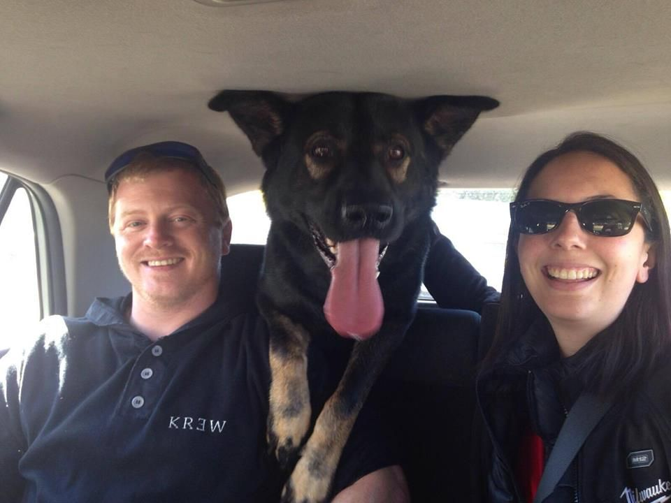
“His coat and general condition have never been better, his stools are very consistent, energy levels are through the roof.”
Steve De Vissar
Melbourne
Hugo · Von Forell German Shepherd
Disclosure: Von Forell dog
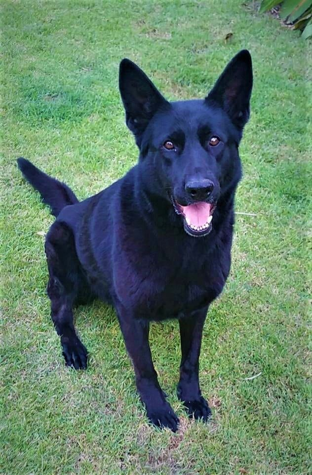
“Shipping to Brisbane was fast, (3 days from order to my door) and well-priced.”
Michael Buckland
Queensland
5-year-old German Shepherd
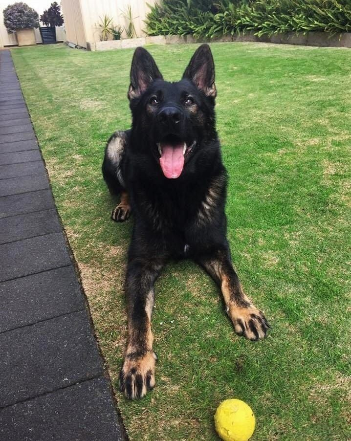
“Super Premium Dry Dog Food without the Premium prices.”
Karis Wills
Perth
German Shepherd
“The smaller biscuit design is great for both our large and small dog.”
Emma Thompson
Perth
One large and one small dog
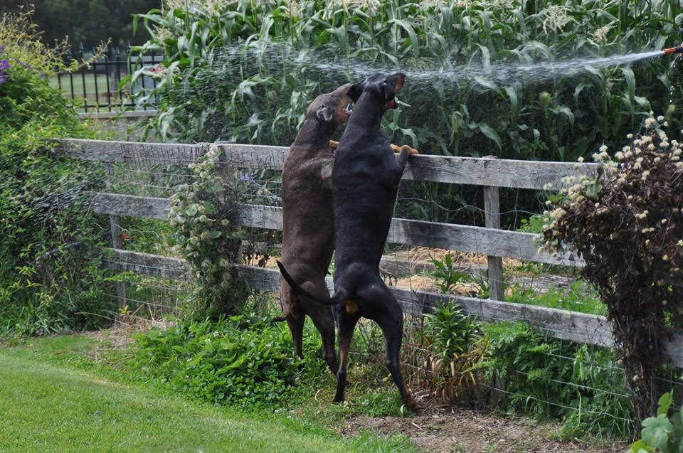
“On a recent visit to the vet… he noted how good the four dogs teeth were, to quote him 'Whatever you are feeding them, keep feeding it'.”
Keryn Mahoney
Tasmania
Dobermanns & Dachshunds
Disclosure: Tasmanian distributor
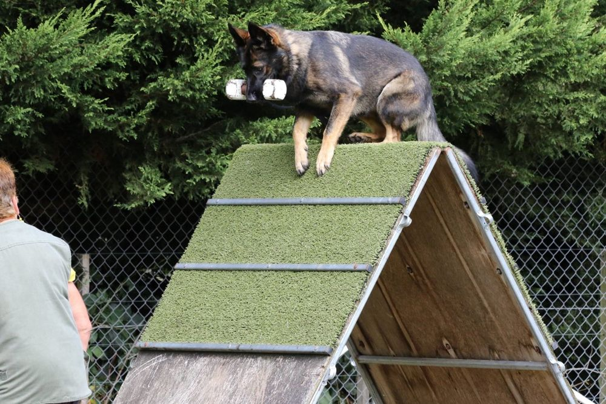
“My dog has been fed the food from a puppy to her adult life… her coat has always looked shiny and healthy.”
Sue Kawecki
Obedience & tracking competitor · Melbourne
German Shepherd
“My dog has loads of energy and is always in excellent physical condition.”
Vaughan Scott
Western Australia
Von Forell German Shepherd
Disclosure: Von Forell dog
“My girl is now back at a healthy weight and her fur although already silky soft is even softer.”
Victoria Mariettakis
Owner
Devon Rex · iPurr Kangaroo
Before launch
Written OK from each person to reuse their words and photo on the new site. Most date from 2016–2020, so fresh ones from Kris's network will help.
From $48 · 2.5 kg trial bag
Free metro delivery over $150 · subscribe, skip or cancel anytime · palatability guarantee